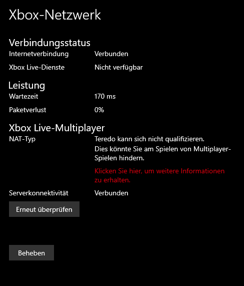

Fix the Minecraft Launcher on a debloated Windows 10 install. (14.11.2022)
Microsoft
On February 8, 2022 I received an email from Mojang stating that I need to migrate my Account to a Microsoft one.
After another two emails, I finally migrated my Account in October.
But I haven't played the Game since sometime in 2021, so I tried to give it another shot today.
Deep Ocean
I downloaded the launcher from https://minecraft.net/ and installed it. After that I tried to log in with my Microsoft Account, but every time I clicked on the button an error popped up stating that there was some type of error with the error code being deep ocean.
So I did the first thing that came to my mind: clicking the info link in the error message. That turned out to be a 404.
The next thing I tried was disabling Pi-Hole for 30 seconds and flushing the DNS cache, it was possible that I was blocking some domains that Microsoft needs for their services. But this has not worked.
YouTube tutorials
After that, I searched "Minecraft Windows 10 deep ocean error". There were a lot of recent videos that showed the same steps: to enable some Xbox Services. After trying to reset the Microsoft Store and Minecraft Launcher, I noticed that there could be a problem with the Xbox stuff because I used a debloat script on my Windows installation.
XBOX
In the Windows 10 settings is a category called "Gaming" and a point called "Xbox-Network". In there is a status for the Xbox-Network e.g. Internet Connectivity, Xbox Live-Services and Xbox Live-Multiplayer. Under the point Xbox Live-Multiplayer is the status for Server connectivity, but for me that was disconnected/unavailable.

So I went to the Microsoft Store and searched for "Xbox" and there it was: the Xbox App got uninstalled by the Debloat script.
Fix
I installed the Xbox App, logged in, installed some missing components and started the Minecraft Launcher, but it was still not working. I was in a loop of having a Game license and playing the Demo.
So I logged out from the Microsoft Store, the Minecraft Launcher and the Xbox App. After logging in again, everything was working.
TL;DR
- debloat script uninstalled the Xbox stuff from Windows 10
- reinstall the Xbox App and the missing components
- restart the PC
- log out of the Microsoft Store, the Minecraft Launcher and the Xbox App
- log back in
- enjoy the Game
archive
The following links are archived versions, as the main ones could break.
https://minecraft.net/
https://www.youtube.com/watch?v=dmBJaZzQZco
Back to top